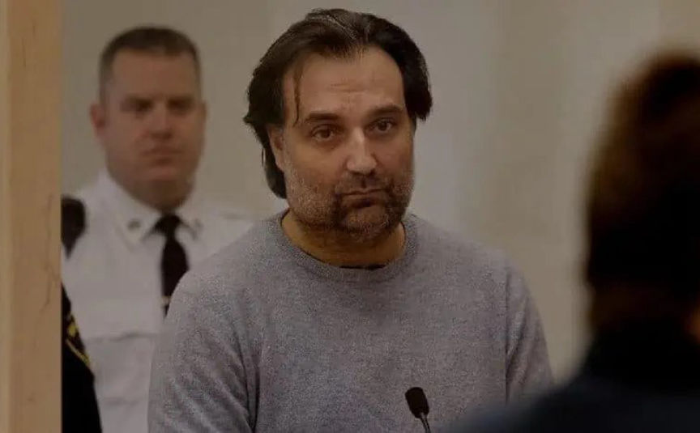
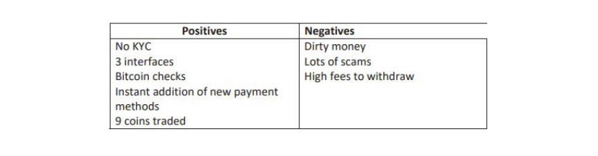
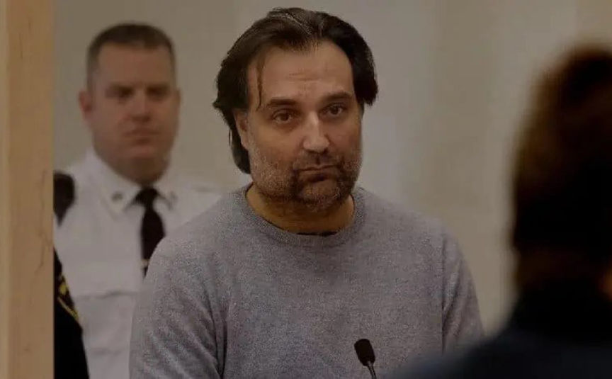
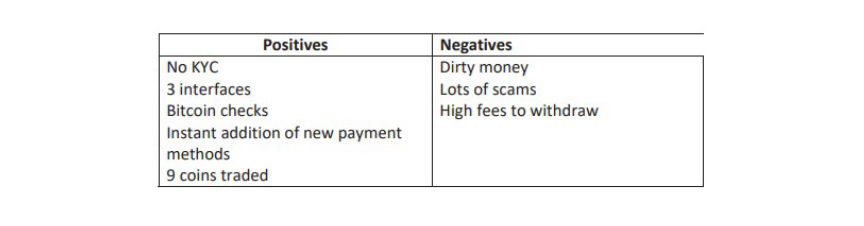

Bitzlato's CEO and Co-Founder Pleads Guilty
~2 min read | Published on 2023-12-09, tagged Cryptocurrency, Cryptocurrency-Regulation, Money-Laundering, Pleaded-Guilty using 323 words.
The co-founder and majority owner of Bitzlato, a Hong Kong-based cryptocurrency exchange that facilitated the movement of over $700 million in illicit funds, has pleaded guilty.

Anatoly Legkodymov, 40, of Russia, co-founded Bitzlato in 2016 and allowed people to trade on the exchange without KYC verification. Where KYC verification was required, users of the exchange were allowed to use the identities of third parties.
Most of Bitzlato's users were buyers and vendors on the now-defunct Hydra Market. FBI investigators established that approximately $389 million was moved from Hydra and ended up in Bitzlato between May 2018 and April 2022. Approximately $316 million was moved from Bitzlato to Hydra in the same period.
Further investigation revealed that Bitzlato received approximately $15 million from the recipients of ransom payments.
Legkodymov and Bitzlato’s other managers acknowledged that a majority of Bitzlato’s accounts were involved in illicit activity. When an executive advised Legkodymov that they should fight against drug dealers “nominally,” to avoid hurting the company’s business, Legkodymov responded by saying that funds seized from drug dealers’ accounts would be “a bonus” to Bitzlato.
Legkodymov also knew that most of the exchange's users did not use their real identities during KYC verification. On May 29, 2019, he wrote to a colleague in a chat: “All traders are known to be crooks. Trading on "drops," etc. You do realize that they all (I think 90%) do not trade on their cards.”
The investigators also gained access to a spreadsheet prepared by Bitzlato's management. The spreadsheet had a list of the exchange's pros and cons. Lack of KYC was listed as a positive, while "Dirty money" was one of the negatives.

Legkodymov was arrested on January 17, 2023, in Miami, following an international operation that took down Bitzlato.
Legkodymov pleaded guilty to one count of operating a money-transmitting business that transported and transmitted illicit funds. In addition to pleading guilty, Legkodymov agreed to forfeit approximately $23 million.

Anatoly Legkodymov
Anatoly Legkodymov, 40, of Russia, co-founded Bitzlato in 2016 and allowed people to trade on the exchange without KYC verification. Where KYC verification was required, users of the exchange were allowed to use the identities of third parties.
Most of Bitzlato's users were buyers and vendors on the now-defunct Hydra Market. FBI investigators established that approximately $389 million was moved from Hydra and ended up in Bitzlato between May 2018 and April 2022. Approximately $316 million was moved from Bitzlato to Hydra in the same period.
Further investigation revealed that Bitzlato received approximately $15 million from the recipients of ransom payments.
Legkodymov and Bitzlato’s other managers acknowledged that a majority of Bitzlato’s accounts were involved in illicit activity. When an executive advised Legkodymov that they should fight against drug dealers “nominally,” to avoid hurting the company’s business, Legkodymov responded by saying that funds seized from drug dealers’ accounts would be “a bonus” to Bitzlato.
Legkodymov also knew that most of the exchange's users did not use their real identities during KYC verification. On May 29, 2019, he wrote to a colleague in a chat: “All traders are known to be crooks. Trading on "drops," etc. You do realize that they all (I think 90%) do not trade on their cards.”
The investigators also gained access to a spreadsheet prepared by Bitzlato's management. The spreadsheet had a list of the exchange's pros and cons. Lack of KYC was listed as a positive, while "Dirty money" was one of the negatives.

A list of Bitzlato's positives and negatives
Legkodymov was arrested on January 17, 2023, in Miami, following an international operation that took down Bitzlato.
Legkodymov pleaded guilty to one count of operating a money-transmitting business that transported and transmitted illicit funds. In addition to pleading guilty, Legkodymov agreed to forfeit approximately $23 million.